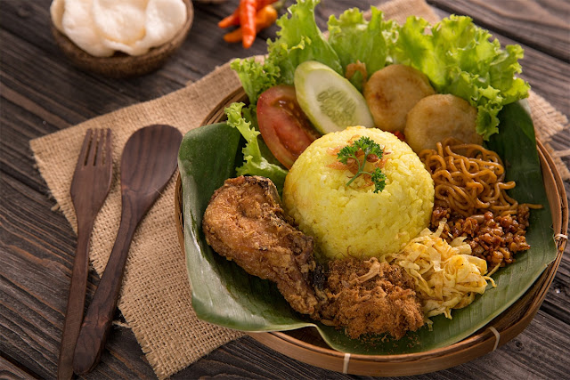

Rekomendasi Resep !!!
Nasi Kuning

Hidangan lezat berbahan dasar nasi ini berasal dari Pulau Jawa dan disajikan dalam berbagai perayaan atau upacara adat karena melambangkan rasa syukur.
Selain di Jawa, Nasi Kuning juga bisa ditemukan di Bali, Manado, dan Banjar.
Warna kuning pada masakan ini berasal dari pewarna alami kunyit sehingga tidak hanya kaya rasa tetapi juga aman dikonsumsi.
Menurut masyarakat Jawa, warna kuning melambangkan emas yang berarti kekayaan.
Bahan-bahan yang perlu Anda siapkan adalah:
1 kg beras
Kunyit potong 5 cm
2 cm potongan lengkuas
900ml santan
1 buah kelapa tua
2 lembar daun pandan
Selengkapnya
Nasi Uduk

Berasal dari Jakarta, Nasi Uduk adalah nasi kukus ala Betawi Indonesia yang dimasak dengan santan dan banyak ditemukan di seluruh negeri.
Rasanya gurih dan serbaguna sehingga bisa ditemani dengan lauk apa pun.
Bahan-bahan yang perlu Anda siapkan adalah:
300 gram beras, dicuci bersih
450 ml santan
2 lembar daun salam
Selengkapnya
Lontong Sayur
Lontong Sayur adalah masakan Indonesia yang terbuat dari kue beras yang dipadatkan dan biasanya disajikan dengan kari santan yang diolah dengan pepaya muda, tahu rebus kedelai, dan telur rebus.
Makanan ini dapat ditemukan hampir di mana-mana di seluruh nusantara dan setiap daerah memiliki resep khasnya masing-masing
Bahan-bahan yang perlu Anda siapkan adalah:
3 sendok makan minyak sayur
500 gram daging sapi, pilih potongan untuk rebusan, potong-potong seukuran gigitan
4 labu siam, kupas, buang bijinya, dan potong dadu
Selengkapnya